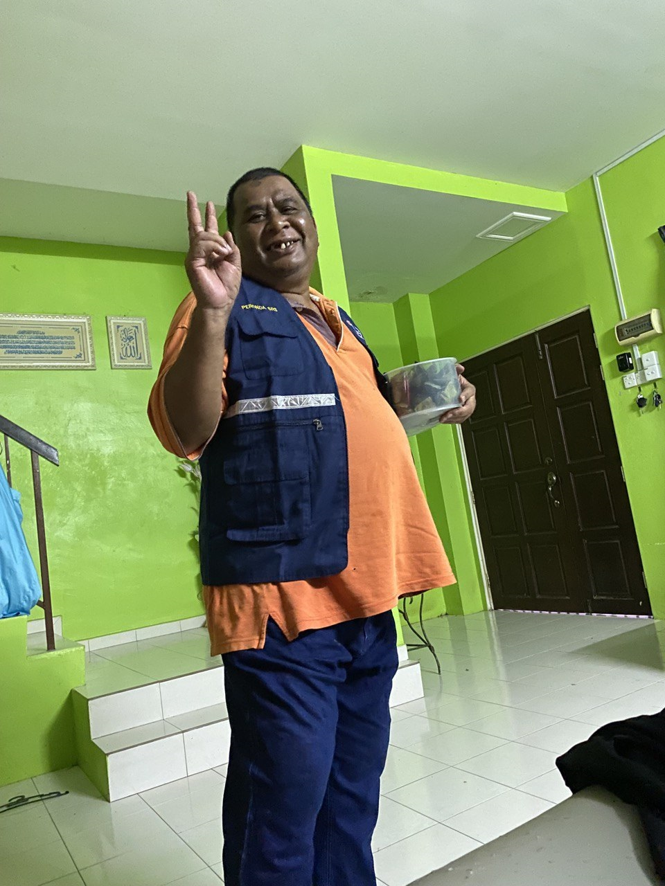

MY FAMILY

My Father
My father name is Mohd Balkttis bin Yaccob
My father born at Perak on 2 January 1966.
My father have 13 siblings and my father is the 11th child.
Now, my father is 57 years old.
My father retired at the end of 2020 as a truck driver for the Gardenia Company.
My Mother
My mother name is Saimah binti Abdullah Khadi.
My mother born at Perak on 31 December 1963.
My mother have 9 siblings and my mother is the 4th child.
Now, my mother is 60 years old.
My mother never worked after marrying my father.
My Elder Sister
My elder sister name is Maisyarah binti Mohd Balkttis.
She was born at Hospital Tapah Perak on 15 September 1995.
She is the eldest child in our family.
Now, my sister is 28 years old.
My sister works 2 shifts, in the morning she works at a beauty spa in Kampar, while in the evening she goes to work at US Pizza in Tapah.
My Second Sister
My second sister name is Solehah binti Mohd Balkttis.
She was born at Hospital Tapah Perak on 20 September 1996.
She is the second child in our family.
Now, my sister is 27 years old.
My sister does not work. She only helps my mother at home.
My Third Sister
My third sister name is Adibatul Husna binti Mohd Balkttis.
She was born at Hospital Tapah Perak on 31 March 1999.
She is the third child in our family.
Now, my sister is 24 years old.
She works at the JK Factory while waiting to be called to join the police force.
My sister is a former graduate of Universiti Sarawak Malaysia.